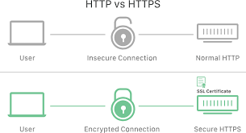

Definisi
HTTP (HyperText Transfer Protocol) adalah protokol yang digunakan untuk mengirim dan menerima data di web. Sedangkan HTTPS adalah versi aman dari HTTP yang menggunakan enkripsi SSL/TLS untuk melindungi data.
Cara Kerja
Ketika kamu mengakses situs web, browser mengirimkan permintaan (request) HTTP ke server. Server merespons dengan mengirimkan data (response) seperti teks, gambar, atau video. HTTPS memastikan semua data tersebut dienkripsi agar tidak bisa disadap.
